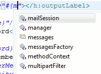

< Main Index Portal Tools >
Richfaces 3.2 is now fully supported in code completion and visual page editor.
Code completion now has icons illustrating what they are from. Currently we separate between resource bundles, seam and jsf components.
